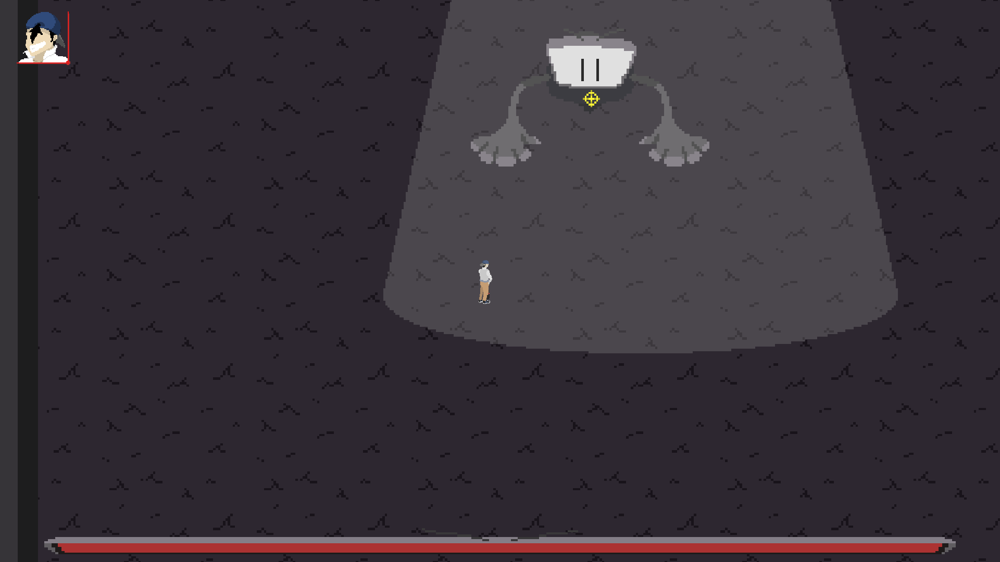
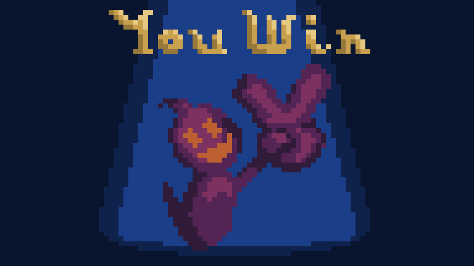
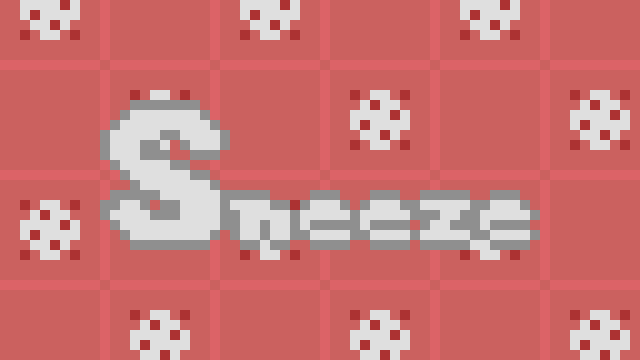

Psychosomatic is currently in development by myself and Raymond Williams. Play as the Therapist in a world where therapy is much more action packed. Fight head to head with mental illnesses to save your patients from their grasp!
I am responsible for art and animations, UI/UX, sound design, and most game design elements (narrative, systems, level, etc.) Psychosomatic is my longest running project so it is no coincidence that I have learned the most from it. Originally starting it in around March of 2020, outside of the planning phase we made an embarrassingly small amount of progress, but fortunately I can pinpoint exactly why. We had no scheduling, no deadlines, no rigid structure to our development process. A lack of this structure caused us to have to spend tons of time figuring out what to work on instead of just jumping in. To fix this we started setting hard deadlines, we meet on the day of the deadline to discuss progress and set out goals for the next deadline. This produced immediate rewards and led to us being able to complete a rather impressive prototype by the end of the summer.
Our goals for psychosomatic are to have a releasable version of the game that we can put on steam and other distribution websites in 2 years (2022), so keep checking back. Psychosomatic is a hush-hush operation right now so there is no download, but you can check out my twitter for possible updates.
Royal Rumble was created for the Texas A&M Chillennium Game Jam, the largest collegiate game jam in the world, and placed second! Ride the waves of your faithful servants in your crusade to overthrow the other king. Enjoy a 3D multiplayer Free-For-All experience with wacky physics and even wackier sound effects. Requires 2 players and 2 controllers.
I was responsible for game design (narrative, level), music, sound design, and some of the more minor mechanics. Our first challenge came exceedingly early on as our fourth member backed out 2 days before the competition and we were not able to get a new fourth member due to the infrastructure of the jam. Because of this, I ensured during planning that the scope of our project would be small enough for our team to complete. We originally intended for the game to be a more single player experience, but we later realized that the goofier aspects of the unity physics system would work better for a multiplayer game. Here I learned an important lesson, you must be open and willing to changes to a game's formula, especially in planning phases. If we were more apprehensive to change the original idea of the game, I believe that our game would not have been as fun as it was, or placed as well as it did.

Mosh Pit was created for Itch.io's Minijam 14 Elements and placed 1st in graphics and sound, and 5th overall. The Conductor just wants some peace and quiet. Help him out, will you? You fire your instruments and switch with the beat of the music. (Please note the piano notes take a while to open and do damage)
I was responsible for art, music, some game design elements (enemy ai, narrative), UI, and some programming elements (enemy AI, and some smaller ones). Mosh Pit was my first completed game, so it is a little rough around the edges, but I love it still the same. In making this game I learned the first lesson any game developer must learn: the game will be harder for the players than the person who made it. This game is exceedingly difficult, and the mechanics don't really mesh together. A particular issue is the jump from long range to short attacks leaves the player basically unable to use the short-range weapon reliably. The lack of checkpoints makes dying absolutely devastating and pushes players to quit. I also learned the importance of team communication. I spent copious amounts of time doing elaborate animations for many of the weapons and enemies, most of which were unusable because these objects were programmed to move in different times. I learned to keep a continuous conversation with the programmer as both a designer or an artist to make sure we have the timings, hitboxes, and other elements aligned and vice versa.

Sneeze was created for the Texas A&M University Coronavirus jam, and placed 5th. Play as the coronavirus attempting to infect the entire world, one library at a time. Sneeze from one person to another with crisp timing to infect everyone in the room and expand your grasp!
I was responsible for art, sound design, level design, UI, and programming. I led a team of 3 people, where I was personally responsible for level design, system design, sound design, and some major programming components. From this project I learned how to manage a team with wildly different experience levels. Since my two teammates we significantly less experienced than I was, I wanted to have completely open communication with absolutely no judgement. In this regard, I thought we were successful. However, the night before the submission day, the game was completely broken, and I knew we would not have enough time to fix it the next day. I had to stay up all night fixing the game, learning the hard way to make sure that my team was on the same wavelength and to properly learn the bounds of our abilities.